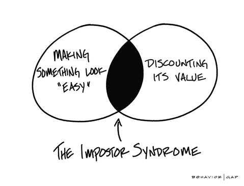

Foundation Learning Plan
Long-term goal &/or Career Pathway
My long term goal is to become a proficient enough web developer so that I can bring these skills into my current managing position at a NGO and use it to update our company’s website as well as potentially using these skills in developing tools for coral reef research.
Since I am also “stuck” in New Zealand at the moment, I also hope to freelance or get short-term work in the web development field before I move back overseas to continue my work.
my learning Strengths & limitations
Strengths:
- Curious - quick learner
- Practical logical thinker
- Problem solver
- Disciplined
- Stay calm and methodical under pressure
Limitations:
- Imposter syndrome
- Perfectionism - will be stuck on the small details and have to get it right before moving on
Non-technical/human skill development
I’d like to further develop my communication skills, especially interpersonally and developing the confidence to communicate my ideas and thoughts. I’d also like to develop my decision making/time management skills in terms of deciding when to move on with a task instead of getting caught up in the small details.
After exploring neuroplasticity and growth mindset in Sprint 4 of Foundations, I would also like to develop these human skills. Throughout my learning journey I want to actively be pracitising growth mindset.
My commitment to managing the workload in this programme
I commit to working productively and safely with my fellow cohort, facilitators and industry/community representatives by being respectful of others and holding myself accountable for my actions and behaviours. In order to ensure productivity and managing the workload, I will commit to meeting deadlines set by both myself and those set by Dev Academy, and if for whatever reason I cannot make these deadlines I will commit to expressing this to my facilitator in advance for potential extensions.
If the workload begins to build up and I cannot handle the pressure I will commit to reaching out and expressing this to either my facilitator, family and friends. I will also commit to keeping my mental health in check by taking breaks, staying active and being kind to myself along this learning journey.
My commitment to how & where to seek help
If I need help, I commit to first spending time on researching what I need help with (e.g. google), and if I cannot achieve this I will reach out to the community on slack, and if this does not answer my question I will reach out to my facilitator in our weekly catch ups.
My expectation from the facilitation team
My expectations from the facilitation team is to offer support, guidance and motivation in a respectful and timely manner.
Bootcamp Learning Plan
Long-term goal &/or career pathway
I hope to use the skills I gain during Dev Academy and bring it into the coral reef research world. I’m not exactly sure what this will look like yet, but I would like to develop tools to help monitor and manage the worlds coral reefs.
Bootcamp strengths & weaknesses
My strengths and limitations I identified from my foundation’s learning plan I believe will carry over to my time at bootcamp. I think that all my strengths will help me get through bootcamp on an individual level especially on the technical side of things. But after knowing that bootcamp will also really test my human skills I would add a couple more things to my strengths such as:
- Growth mindset
- Emotional intelligence
During foundations I thought that having a growth mindset related more to learning the technical side of programming, however, on reflection right now, I realise that this will also be the case for learning the human skills which I will need to have more practice at during bootcamp.
Having emotional intelligence is going to serve me well during bootcamp, especially having to work with others in my cohort.
My imposter syndrome and “perfectionism” is going to be challenging to tackle during bootcamp. I think that my imposter syndrome is going to be a hindrance during group work, feeling like I’m not as good as my fellow teammates.
During foundations, I’ve noticed my “perfectionism” flare up especially during coding of the tech challenges in Sprint 5. I found myself spending way too much time trying to figure out the “best” way to code the solutions, sometimes even glazing over the basics in order to find the ultimate “better” solution. I feel like this is going to be a hindrance during bootcamp and something I will have to reign in while working in groups.
Biggest non-technical challenge at bootcamp
I think the biggest non-technical challenge I will face at bootcamp will be to silence the self-doubt and imposter syndrome.
Non-technical/human skills development at Bootcamp
I would like to develop my interpersonal communication skills and have the confidence to communicate my ideas and thoughts without feeling like an imposter.
I would also like to further develop my growth mindset for developing these non-technical human skills. For example, I have previously had a fixed mindset on human skills thinking that they are just a product of your personality or its “just how you are” but I’ve now realised over foundations that even these human skills can be developed.
Expectations from the bootcamp team
My expectations from the bootcamp team are to provide support in the form of guidance, feedback, and motivation in a respectful and timely manner.
Expectations of myself on bootcamp
I expect to commit to working productively and safely with my fellow cohort and facilitators by being respectful of others and holding myself accountable. If I need to seek help, I commit to first researching an answer for myself and if I cannot achieve this I will reach out to my cohort and/or my bootcamp facilitator. I also expect to complete my work and meet deadlines in a timely manner, and if this cannot be achieved then to reach out to a bootcamp facilitator in advance.